About

Design Elixir houses the creative mind of Megan Byers and her quest to create media with brilliant character and deliberate user-experience.
I’m an all-in-one creative consultant, specializing in web development, graphic design and illustration. I believe great things come from great connections, and serving small businesses and entrepreneurs enables powerful relationships rooted in a collective, passionate vision. Through websites, logos, typography, posters, branding materials and any other client-related needs, I create work structured with practical user experience and fabricated with a flair of character.
Welcome to Design Elixir
We specialize in catering our artistic tools to your creative vision.
The foundation of Design Elixir is focused on functionality and excellent user-experience, and framed by an authentic, one-of-a-kind approach expressing your ideality to the world. We provide a diverse design portfolio ranging from minimalist to abstract, industrial to organic. Design is fluid, and the combination of different mediums (code, painting, drawing and more) results in unique and versatile media. Design Elixir simply strives to provide the world with good design intertwined with the spirit and character of amazing individuals.
Like you!
Our Mission
Skills & Services
Graphic Design & Illustration
Logos • Flyers • Posters • Advertising • Infographics • Brochures •
Branding Materials • Illustrations • Product Photos • Murals •
Stickers • Packaging Typography • Digital / Vector Art
Name a design need, and we’ll fulfill it! Using the tools of Adobe Creative Suite, we develop print and digital materials to make your business and mission shine.
Web Development
Wordpress • Wix • Squarespace • Weebly • Webs • Page Design •
Page Development & Maintenance • Custom Wordpress Themes •
E-Commerce • SEO
From establishing a domain name to launching a fully-responsive site, we provide all necessary services to build a web presence that covers all the bases.
Our Services
A lil' something about Megan:
Megan strives to learn a little something about everything. Raised on the Colorado Rockies, you can find her on alpine trails dancing like nobody’s watching. She finds inspiration everywhere, but especially in wild flowers. When the seed of an idea is planted in her mind, the stubborn nature of Megan’s brain refuses to give up, pouring hours into practice, persistence and perfection. In case you were wondering what Megan’s done on any given day since May 23rd, 2013, she can pull up a journal entry from any day from then to now. Within these pages you’ll find a drive for new skills and experiences that never sleeps. Whether it be coding, illustrating, painting, fly-fishing, growing a garden or cooking a mean ribeye steak, Megan is curious and eager to tackle challenges head on.
About Megan
Contact Me
To: yourbeautifulface@email.com
From: megan@designelixir.studio
Subject: Let's Chat!
I'm always looking for great businesses to partner with, and a new challenge to tackle. Contact me at megan@designelixir.studio for any questions or inquiries.
I've got a vibrant web presence, the internet is my favorite thing after all. Check out my code, attempts at photography, illustrations, work history and more.
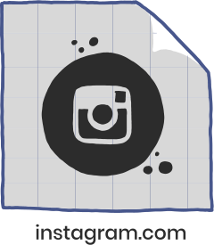 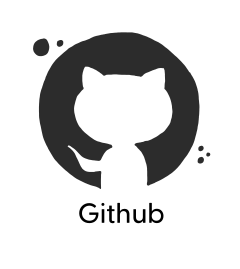
About This Site
Last login:
megan-byers:~ designelixir$ git clone https://github.com/coloradical/Rae_Portfolio.git
Cloning into 'Rae_Portfolio"...
remote: Loading website illustrations: 172 objects, done.
remote: Counting objects: 100% (172/172) done.
Finder

The Miller Bros-Sticker & Logo Designs
Design a unique, eye-catching logo and stickers to compliment the adventures of two brothers and their Volkswagen Westfalia.
Twin Lakes General Store-Website Development
Revamp the website for a historic, 141-year old mountain general store with a clean layout.
Vans Ultrarange Project-Product Photos
Capture product photos and videos for social media posts and advertisements to promote the adventure lifestyle of Vans UltraRange sneakers.
Kat's Script-Custom Typography
A script font face inspired by the handwriting of my friend, Kat Hebda.
Debra Austin, JD, PhD-Website Development
Design and develop a website for University of Denver Law Professor Debra Austin to house her research articles and blog.
West Flanders Brewing Company-Brand & Marketing Materials
Using an existing logo, create distinct and eye-catching brand elements for a variety of print media and advertisements.
Northern Wild -Sticker Designs
Illustrated sticker designs for the Northern Wild - a girl and her samoyed.
University of Colorado-Website Development
Using existing brand standards, design a graduate website for Class of 2020 Mechanical Engineers featuring keynote videos and a photo gallery of 300+ students.
Civico -Brochure Designs
Help transition a political group's brand from old to new with fresh layouts for informational brochures.
Killa Nilla-Album Artworks
Design abstract and psychedelic album covers to match the kaleidoscopic sounds of dubstep music created by artist Max Antoine (Killa Nilla).
Testimonial - Miller Bros
Megan was a joy to work with! She truly brought our vision to life and helped us design logos, stickers, and apparel that have revolutionized our brand. She was very engaged and involved throughout the entire process, and helped us cultivate our vision to a place that surpassed the ideas we brought to the table.
Testimonial - Debra Austin
Megan was extremely responsive in listening to my objectives and redesigning that page in my site. I recommend Megan as a creative, collaborative, and professional young web designer and I’m so delighted with both my website and the technical capacity I gained by working with Megan.
Testimonial - Bob Mathes
Megan has been a great asset to my small business by helping us transition away from an out-of-date website and social media we inherited from former owners. From great concept and design, tech fixes and consulting, art, photography, and helping get an online shopping platform built. I’ve never seen someone be so engaged and work so hard, and recommend her for any sized project!
Miller Bros - Logo and Sticker Design
The Miller Bros
Logo and Sticker Design
March '20
Tools: Illustrator
Following the two-year production of a documentary showcasing the spirit of the open road, Camden & Spencer Miller (Miller Bros) prepared to submit their premier film “The Comfort Zone” to festivals across the world. To supplement their message of authentic and unique storytelling, I crafted colorful, organic illustrations based around the places visited in their baby blue 1982 Volkswagen Westfalia, Lars.
Camden and Spencer Miller sit in Lars.
The Miller Bros requested a bright color palette that utilized flowers, mountains and other natural elements from their travels illustrated in an organic style.
The first steps of my creative process revolved around developing a sense of the environments visited in Lars. I could sum the majority of their travels to deserts, mountains, coasts and forests. These environments naturally aligned with their goal for eye-catching, colorful stickers to commemorate their travels. I researched the color of their Volkswagen bus and built color palettes off of this basis, and sketched multiple angles of Lars.
The diverse travels through the deserts, mountains and coasts of the West made it easy to create multiple options for the Miller Bros to choose from.
I hand-drew over 20 designs to choose from showcasing different subjects and environments that I found within their footage. Some were selected as sticker designs, some are used as variations of their logo.
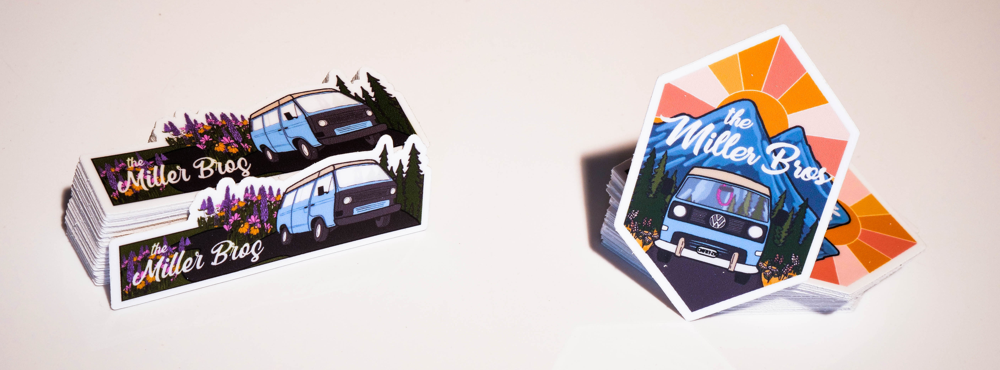
Megan was a joy to work with! She truly brought our vision to life and helped us design logos, stickers, and apparel that have revolutionized our brand. She was very engaged and involved throughout the entire process, and helped us cultivate our vision to a place that surpassed the ideas we brought to the table. Megan is innovative, savvy, and professional; she is an artist in its purest form! We will be using Design Elixir for any design needs in the future, and wholeheartedly recommend her to anyone looking to add a distinct character to their brand.
-Camden and Spencer Miller, The Miller Bros
Learn more about the Miller Bro's premier film, the Comfort Zone at themillerbros.com.
Boulder Baja - Logo Design
Boulder Baja
Logo Design
April '19
Tools: Illustrator
Assigned with the task of building an off-road vehicle to compete in the Society of Automotive Engineers (SAE) Baja competition, the University of Colorado’s racing team aspired to stand out with a custom logo to embellish their finished car and team gear. Pulling inspiration from sports team logos and racing culture, the logo represents the school’s mascot (the Buffaloes) while utilizing the rough and tough nature of off-road racing.
The BAJA team poses with their off-road vehicle, embellished with a shiny new logo.
 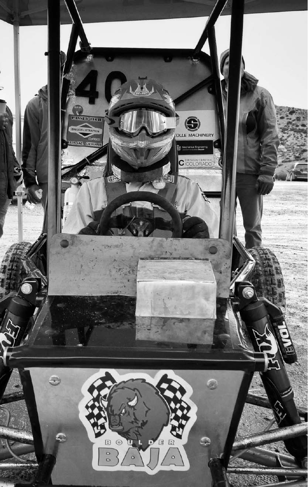
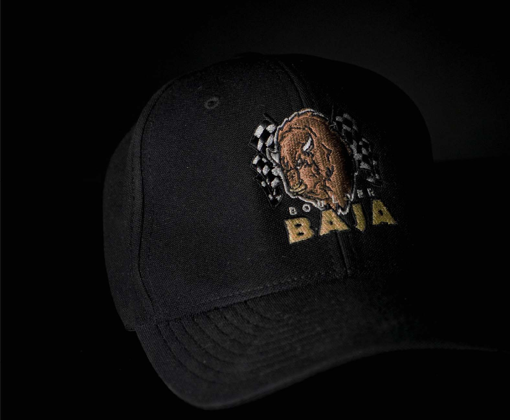
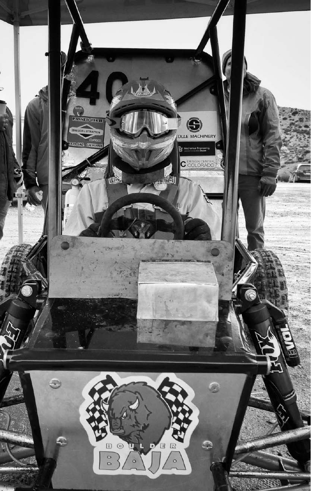
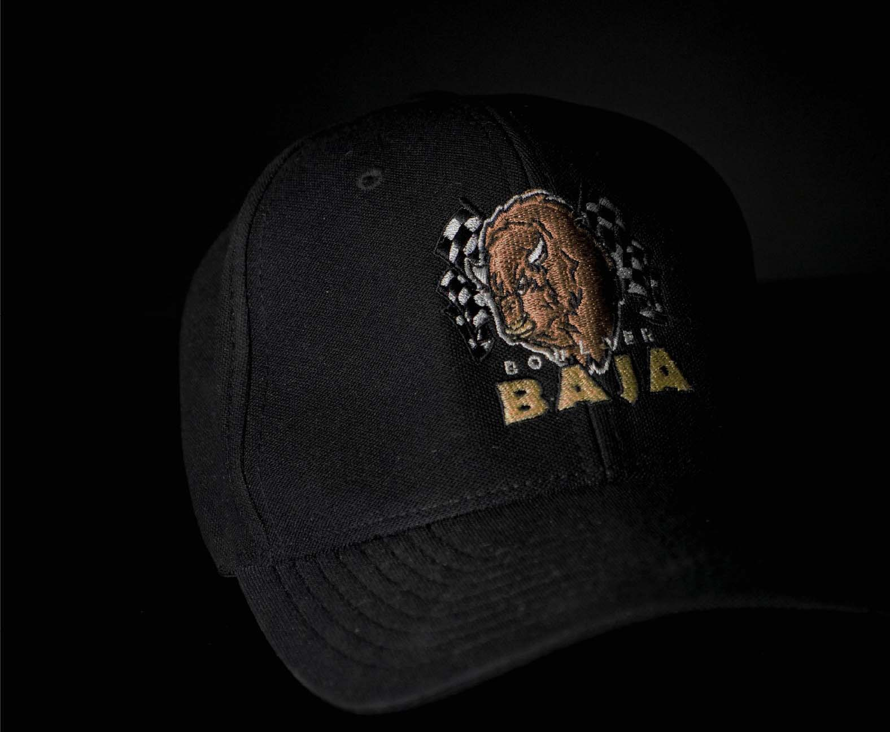
The logo decorated the team's off-road vehicle, embroidered on hats and shirts, and used for presentation materials.
West Flanders Brewing Co. - Branding and Marketing Materials
West Flanders Brewing Company
Brand Development, Marketing Materials
August '18 - January '20
Tools: Illustrator, InDesign, Lightroom, Squarespace
Located on historic Pearl Street in Boulder, Colorado, West Flanders Brewing Company is a local Belgian-inspired
restaurant and brewery. The in-house brewing equipment lined amongst industrial brick and Edison era bulbs emits a cozy, timeless and genuine aesthetic. Using an existing logo, I created distinct and eye-catching brand elements for a variety of print media and advertisements. These elements were then utilized onto marketing materials, posters and a menu rework.
 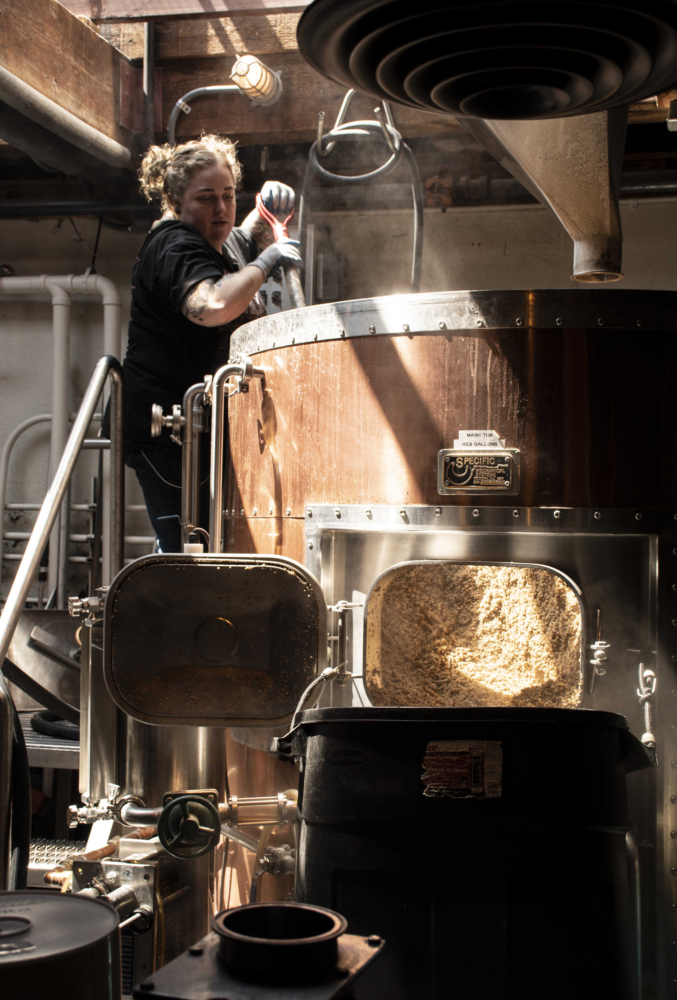
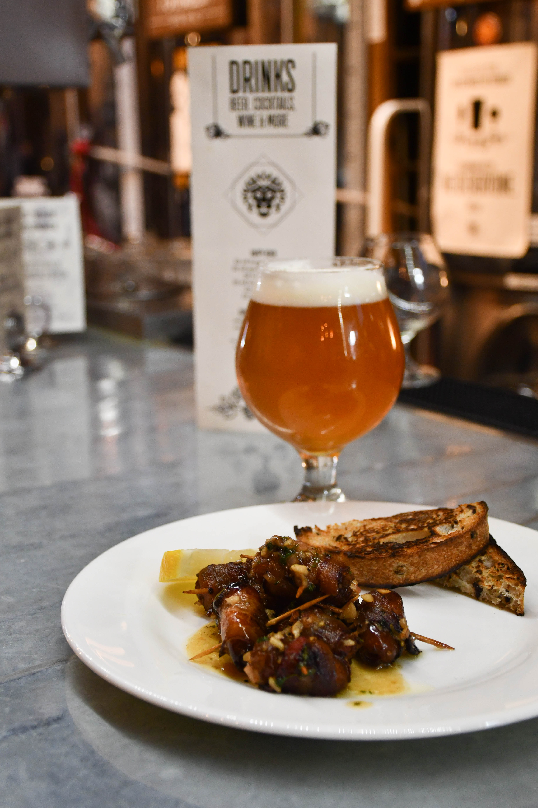
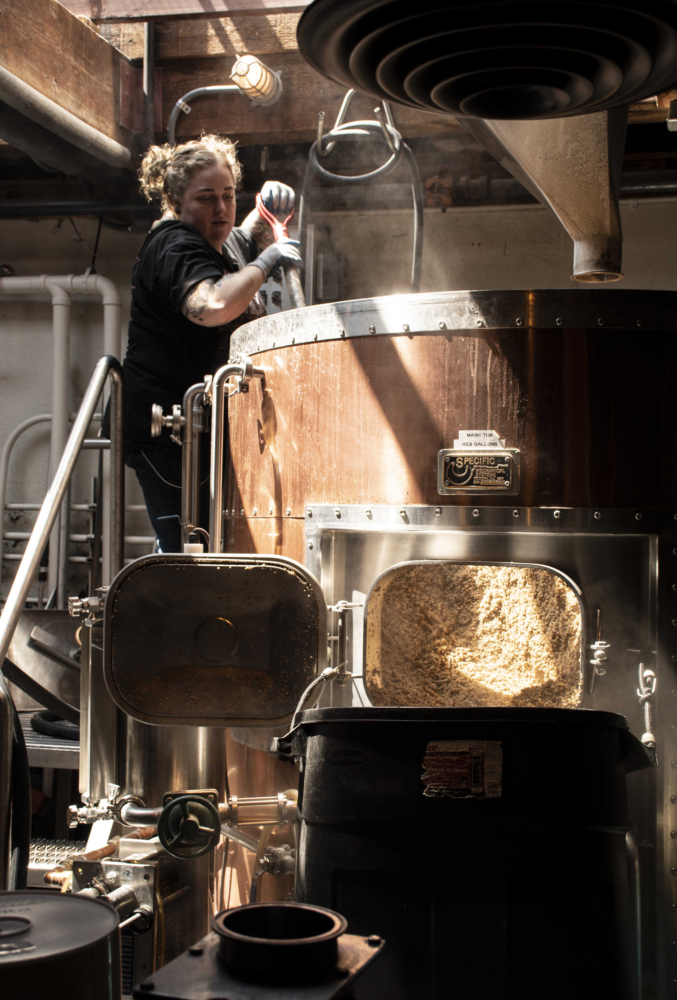
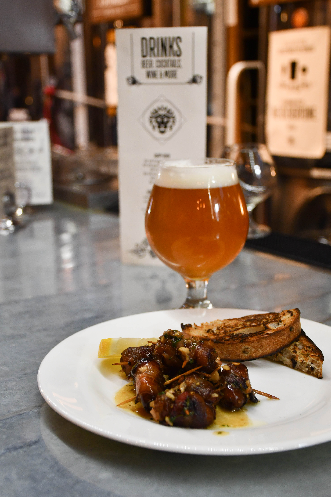

Photos captured by me for West Flander's website and advertisements
Design a brand with the core values of the restaurant: local, authentic, cozy, high quality and hand-crafted.
Using their existing logo, I expanded their brand by developing graphic elements and layouts to create consistency in their marketing and content, while still utilizing pre-established colors and typography. I drew inspiration from the unique interior of the restaurant, creating graphic elements of brewing equipment, hops and even employees with simple, bold line strokes that mimicked the various chalkboard murals around the brewery.
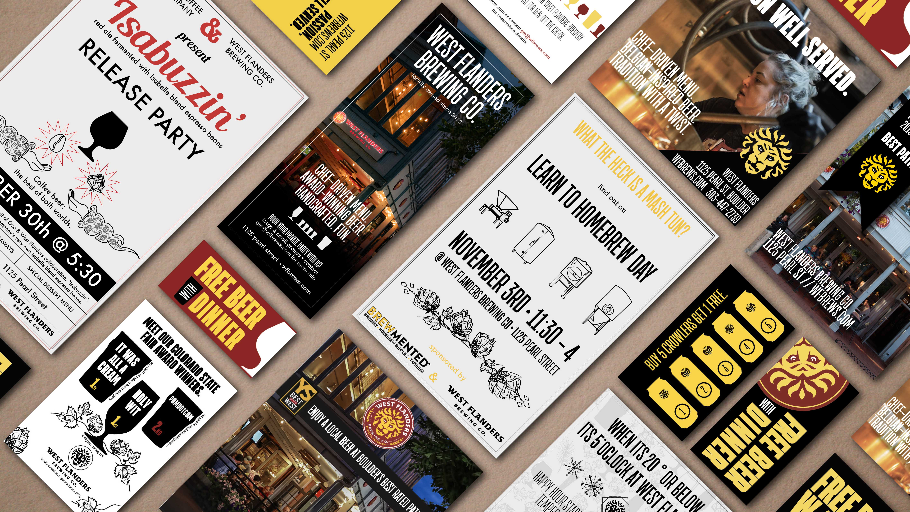 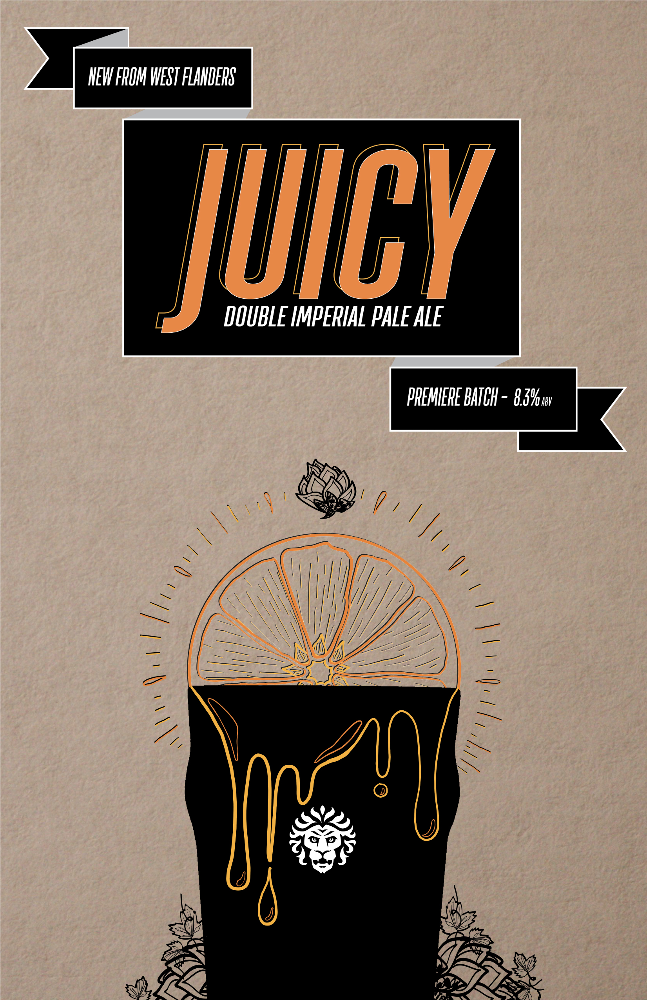
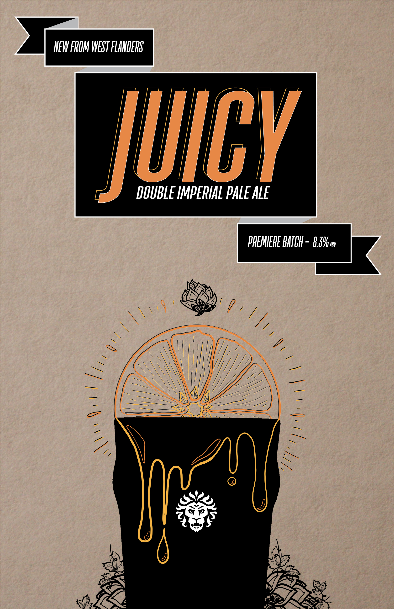
A sampling of advertisements, coupons and posters created over my two years with West Flanders.
Redesign food and drink menus to a user-friendly, organized and clean layout that clearly displays a la carte options, add-ons and allergy information.
After observing hundreds of customers struggle to navigate the West Flanders menu, I began to rework the layout. The location of our a la carte sides was confusing, the size was cumbersome on the table, layout was illogical and the menus became easily stained. Add-ons and allergy information was sectioned off to pull reader attention. Menu became foldable versus single page to prevent the menu information from being stained. Other design goals included reducing page size, improving menu flow by organizing sections, adding happy hour information and incorporating our brand.
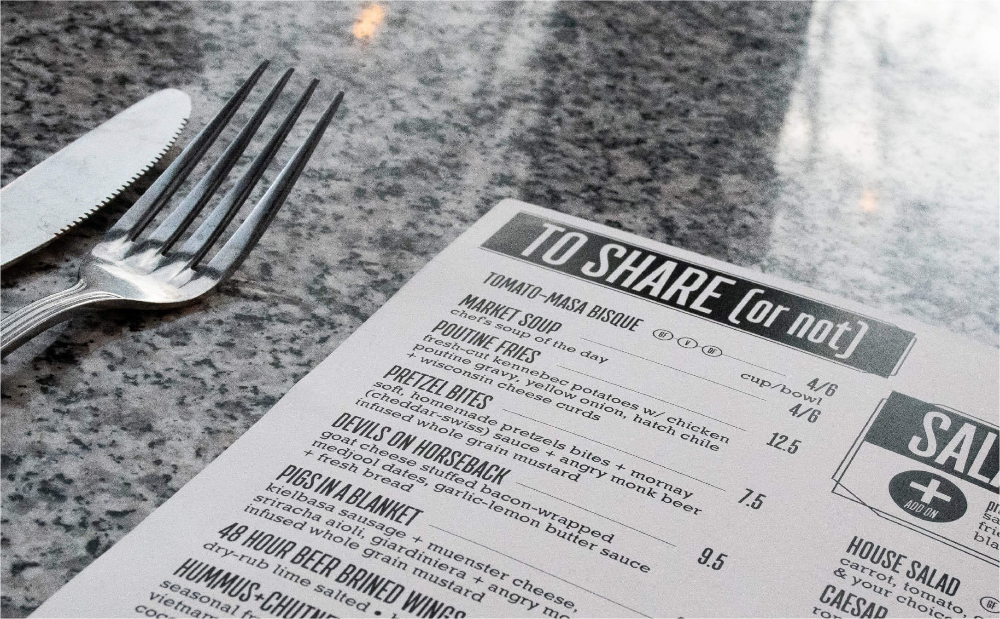Megan played many roles at West Flanders, from busser to waitress, and finally as our graphic designer. Her involvement with every day operations gave her great insight into customer user experience, and she took the initiative to redesign our menu after seeing the flaws in our current layout. She helped our restaurant find an identity after 5 years of unorganized marketing, and designed an aesthetic that helped us stand out in a state with hundreds of craft breweries. We could count on her to meet deadlines and create content, often with only a few days notice. I highly recommend Megan for all graphic design needs.
-Malcolm Emison, General Manager at West Flanders Brewing Company
Vans - Product Photos and Videos
Vans Ultrarange Project
Product Photos and Videos
October '17
Tools: Photoshop, Lightroom
Following a 486-mile backpacking trip across the Colorado Rockies in a pair of Vans Hi-tops, I was commissioned by Vans to take photos and videos for their new line of UltraRange sneakers. This new line of sneakers expanded Vans into the outdoor industry by boasting durability and versatility for a variety of different environments, which I showcased during the fall season in the San Juan Mountains, Colorado.
Skating in the Black Canyon of the Gunnison with a makeshift selfie stick for my GoPro.
Portray the durability and adventurous side of the UltraRange sneakers with a variety of shots ranging from "shoe-selfies" to full body.
These videos were montaged with other Vans Ambassadors work in a 15 second advertisement displayed on Instagram. The ad recieved over 3.8 million views and featured 4 snippets of my videos adventuring through the mountains of Gunnison and Crested Butte, Colorado. High resolution photos were used for a promotional Instagram post.
Photos captured by me in Vans UltraRange sneakers post and advertisement featured on Vans Official Instagram in March of 2018.
Killa Nilla - Album Artwork
Killa Nilla
Album Artworks
June '19
Tools: Illustrator
Given complete creative freedom, I developed two album artworks for singles from electronic artist “Killa Nilla”. Driven by the hypnotic and space-inspired culture of the dubstep, I created album covers based on the titles of the singles, “Traffic” and “Love Me Now”. The albums both feature bold contrast between subject and background and bright colors to parallel the nature and aesthetic of electronic music.

Find Killa Nilla's tracks Love Me Now and Traffic on his Spotify page.
Twin Lakes General Store - Website Design and Development
Twin Lakes General Store
Web Development, Product Photos, Social Media and Web Management
February '20
Tools: Wordpress, WooCommerce, HTML/CSS, Illustrator
Amidst 14,000-foot peaks, Colorado’s largest natural lakes and the United State’s longest backpacking trail resides the Twin Lakes General Store, an alluring and essential stop for travelers for over 100 years. Run solely by Bob Mathes and his shy golden retriever Motu, I completely revamped their site to a clean, easy-to-navigate home base for everything Twin Lakes, with touches of character to honor the marvels of the beautiful mountain town.
The Twin Lakes General Store website is responsive for all devices.
As a popular resupply spot for backpackers, hikers and campers, the general store needed a website that could convey information to future mountain adventurers.
Featuring hand-illustrated touches, paired with striking images and bold red elements to parallel the bright red doors that welcome you upon arrival, the site is intended to exude the personality of a historically rich spot while providing a modern, youthful approach to business.
Footer illustration featuring the highlights of Twin Lakes, Colorado
Bob & his golden retriever, Motu.
Megan has been a great asset to my small business by helping us transition away from an out-of-date website and social media we inherited from former owners. From great concept and design, tech fixes and consulting, art, photography, and helping get an online shopping platform built. I’ve never seen someone be so engaged and work so hard, and recommend her for any sized project!
-Bob Mathes, Twin Lakes General Store & Mercantile Twin Lakes, Colorado